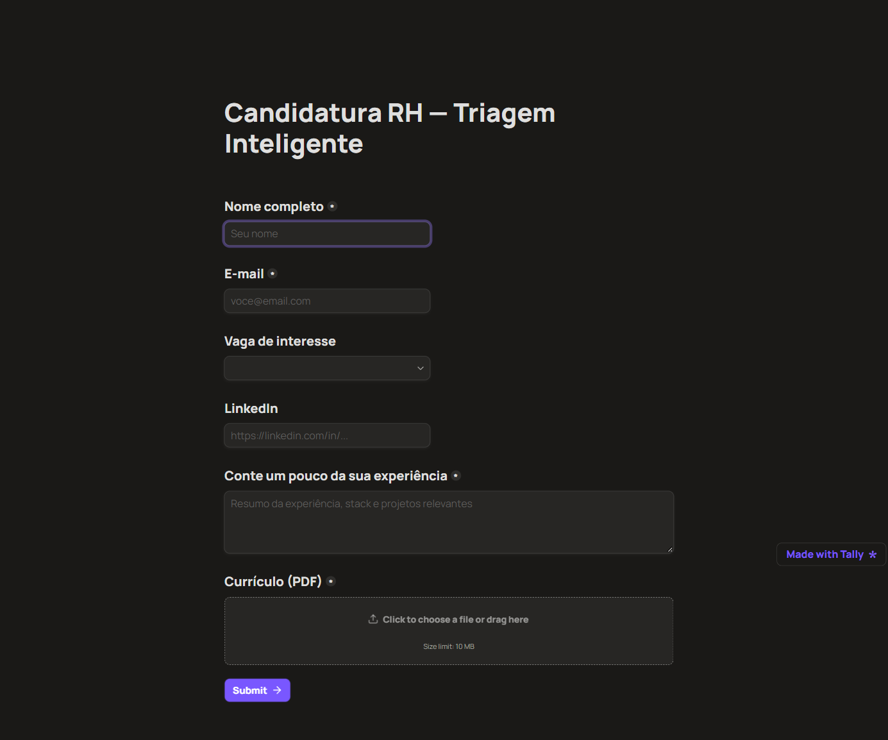
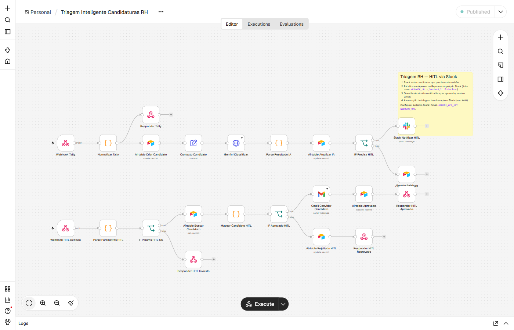
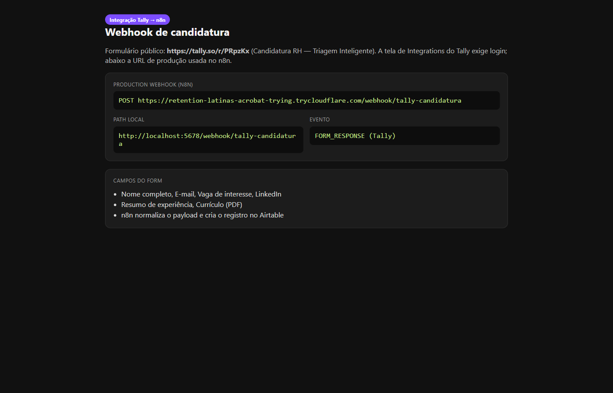
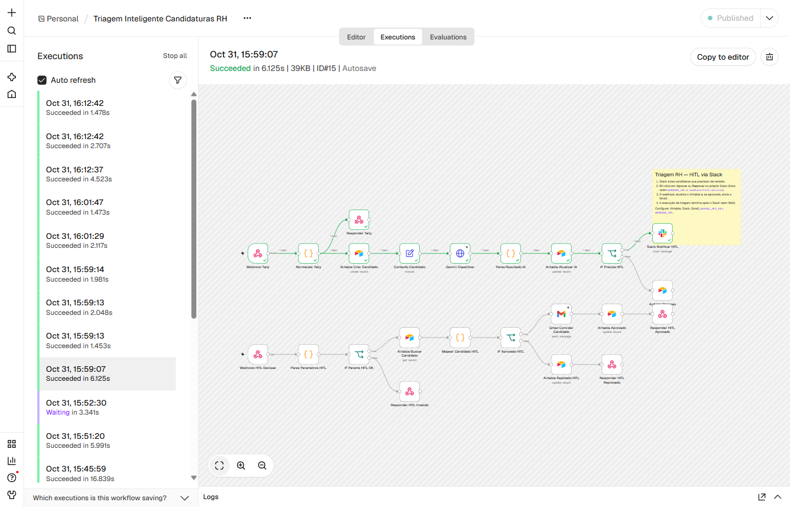
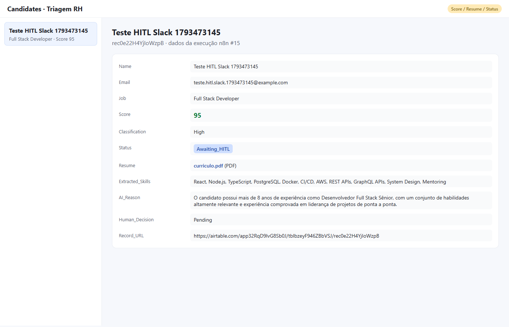
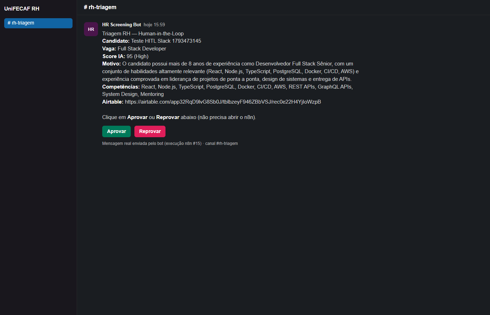
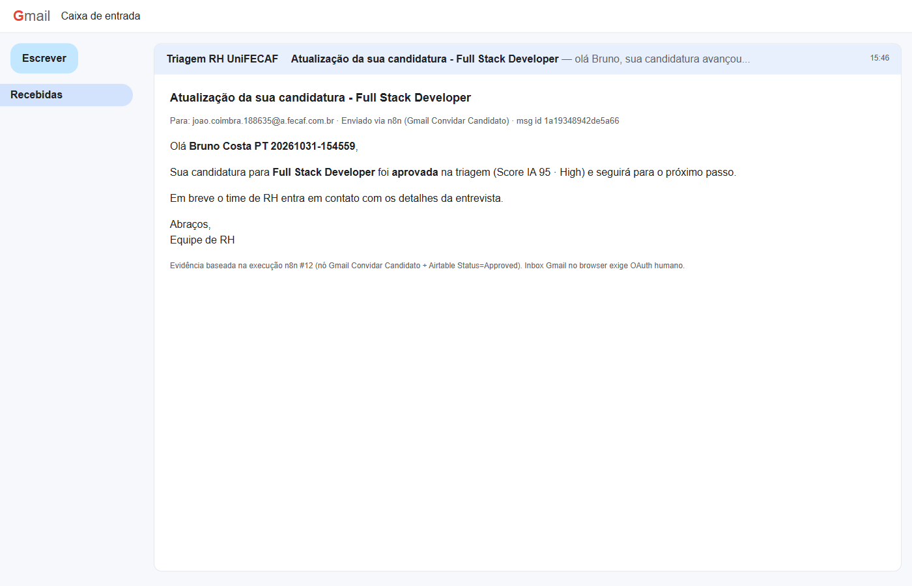

Graduação Tecnológica em Inteligência Artificial e Automação Digital
Desenvolvimento de Aplicações e Automações com Low Code
João Henrique Benatti Coimbra
Triagem inteligente de candidaturas RH
Arquitetura de uma automação empresarial inteligente com low-code e inteligência artificial
2026
Empresas em crescimento recebem um volume elevado de candidaturas por vaga e ainda dependem de triagem manual: abrir formulários, copiar dados para planilhas, classificar currículos sem critério compartilhado e só então comunicar o candidato. Este trabalho descreve a arquitetura de uma automação empresarial inteligente de triagem de candidaturas de Recursos Humanos, orquestrada em n8n, com entrada pelo Tally, persistência no Airtable, classificação por modelo generativo (Gemini), regras condicionais, supervisão humana (Human-in-the-Loop) via Slack e comunicação ao candidato por Gmail apenas após aprovação. A solução percorre a cadeia Entrada, Processamento, Dados, IA, Decisão, Ação, Supervisão e Registro, deixa explícito o papel concreto da Inteligência Artificial e delimita a ação crítica que permanece sob responsabilidade humana. Discutem-se também riscos, cuidados de privacidade previstos na Lei Geral de Proteção de Dados e o tratamento básico de falhas. O fluxo e as instruções de reprodução estão no repositório do projeto.
Palavras-chave: automação; low-code; inteligência artificial; human-in-the-loop; recrutamento e seleção; proteção de dados pessoais.
A triagem inicial de candidaturas permanece, em muitos contextos, dependente de trabalho manual repetitivo. Informações chegam por formulários ou correio eletrônico, precisam ser registradas em sistemas internos, classificadas segundo a aderência à vaga e encaminhadas a responsáveis até a conclusão do ciclo. Quando esse percurso depende de pessoas transferindo dados entre ferramentas e tomando decisões repetitivas sob pressão de volume, aumentam o tempo de resposta, o retrabalho e a dificuldade de rastrear quem decidiu o quê e com qual fundamento.
O enunciado da disciplina propõe a construção de uma automação empresarial inteligente capaz de receber uma demanda, processar informações, utilizar Inteligência Artificial dentro de limites definidos, executar ações em diferentes sistemas e registrar o resultado, com pelo menos um ponto de Human-in-the-Loop. Este documento descreve a arquitetura adotada para o caso de triagem de candidaturas de Recursos Humanos, justificando as escolhas de ferramentas, o papel da Inteligência Artificial, as regras de negócio e os cuidados de privacidade e falha.
A implementação prática utiliza n8n como orquestrador low-code, Tally como formulário de entrada, Airtable como persistência, Gemini como modelo de classificação, Slack como canal de supervisão humana e Gmail como ação de comunicação após aprovação. O código e as instruções de reprodução estão disponíveis no repositório do projeto.
Empresas em crescimento recebem dezenas ou centenas de candidaturas por vaga. O fluxo típico de Recursos Humanos ainda combina leitura individual de currículos, classificação pouco padronizada entre recrutadores e atualização tardia de status. O resultado é atraso na resposta ao candidato, inconsistência de critérios e baixa rastreabilidade.
O processo escolhido é a triagem inicial (screening): do preenchimento do formulário até a decisão de convidar, ou não, o candidato para a próxima etapa. Trata-se de um processo real, sensível à imagem empregadora e adequado para demonstrar o uso conjugado de automação, dados, Inteligência Artificial e supervisão humana.
No cenário atual, o candidato envia currículo por formulário ou e-mail. O recrutador copia os dados para planilha ou sistema de acompanhamento, lê o currículo, classifica sem critério explícito compartilhado, decide sozinho se agenda entrevista e envia a comunicação manualmente, atualizando o status quando se lembra de fazê-lo.
A automação pode padronizar a captura, registrar automaticamente cada candidatura, gerar score e justificativa por modelo generativo, rejeitar baixa aderência com trilha auditável, exigir validação humana antes do contato nos casos médio e alto e centralizar status e motivos. O Quadro 1 resume o mapeamento entre etapas e melhorias.
| Etapa | Melhoria proposta |
|---|---|
| Entrada | Formulário padronizado no Tally |
| Registro | Gravação automática no Airtable |
| Análise | Score e justificativa via Gemini |
| Baixa aderência | Rejeição automática com registro |
| Média ou alta aderência | Validação humana no Slack |
| Comunicação | Gmail somente após aprovação |
| Auditoria | Status e motivos centralizados |
Fonte: elaborado pelo autor (2026).
A solução redesenha o processo na lógica exigida pelo enunciado: Entrada,
Processamento, Dados, IA, Decisão, Ação, Supervisão e Registro. O candidato
preenche o Tally com dados e currículo em PDF. O n8n recebe o webhook,
normaliza o payload e cria o registro no Airtable com status
Under_Review. O Gemini devolve score de zero a cem,
classification, skills e next_step em JSON. Regras condicionais rejeitam
automaticamente scores inferiores a cinquenta (Auto_Rejected) e
encaminham scores iguais ou superiores a cinquenta, bem como falhas da
Inteligência Artificial, para Human-in-the-Loop no Slack.
No ramo de supervisão, a execução da triagem notifica o Slack com links Aprovar
e Reprovar e termina; não há nó Wait. O recrutador revisa o currículo no campo
Resume (Attachment) e clica na decisão. O webhook hitl-decisao
registra Human_Decision e Status. Somente após approve o Gmail
contacta o candidato e o Airtable registra Approved; em reject,
registra-se HITL_Rejected.

Fonte: elaborado pelo autor (2026).
A orquestração permanece no n8n em edição Community, executada via Docker para reprodutibilidade acadêmica. O Tally dispara a entrada. O Airtable guarda estado, anexos e auditoria. O Gemini classifica. O Slack concentra a supervisão humana com link para o registro e links Aprovar e Reprovar. O Gmail executa a ação externa após o ok humano. Em ambiente local, túnel (Cloudflare Tunnel ou ngrok) expõe os webhooks ao Tally e aos cliques do Slack. O Quadro 2 apresenta os componentes.
| Camada | Tecnologia | Papel |
|---|---|---|
| Entrada | Tally | Formulário e webhook |
| Orquestração | n8n (Docker) | Workflow multietapa |
| Dados | Airtable | Tabela Candidates |
| Inteligência | Gemini | Classificação estruturada |
| Supervisão | Slack | HITL assíncrono |
| Ação | Gmail | Contato pós-aprovação |
Fonte: elaborado pelo autor (2026).
Fonte: elaborado pelo autor (2026).

Fonte: elaborado pelo autor (2026).
O fluxo técnico percorre as etapas a seguir. Primeiro, o webhook do Tally chega
ao n8n. Em seguida, o payload é normalizado. O registro é criado no Airtable. A
classificação usa o nó nativo Google Gemini do n8n (não uma chamada HTTP
manual) e o resultado é interpretado como JSON. Um desvio condicional escolhe
entre rejeição automática e fila de supervisão. No Human-in-the-Loop, o Slack
recebe a mensagem com links Aprovar e Reprovar apontando para
WEBHOOK_URL/webhook/hitl-decisao; a execução de triagem encerra.
Quando o recrutador clica, o webhook de decisão atualiza o Airtable e, se
aprovado, dispara o Gmail.

Fonte: elaborado pelo autor (2026).

Fonte: elaborado pelo autor (2026).

Fonte: elaborado pelo autor (2026).
As integrações realizadas são: Tally para n8n por webhook; n8n para Airtable em
operações de criação e atualização; n8n para Gemini pelo nó nativo Google
Gemini; n8n para Slack na notificação de supervisão; n8n para Gmail na
comunicação pós-aprovação; e um segundo webhook (hitl-decisao) para
registrar a decisão humana. O enunciado exige ao menos dois sistemas externos;
a solução excede esse mínimo de forma justificada pelo processo real de
triagem.
A base Airtable HR Screening concentra a tabela Candidates, com campos em inglês para aderência a convenção global de dados. O Quadro 3 resume os campos principais.
| Campo | Conteúdo |
|---|---|
| Name, Email, Job, LinkedIn | Identificação e vaga pretendida |
| Summary | Texto enviado pelo candidato no Tally (não é resumo gerado pela IA) |
| Resume | PDF em Attachment, para revisão humana |
| Score, Classification | Resultado numérico e faixa High, Medium ou Low |
| AI_Reason, Extracted_Skills, Suggested_Next_Step | Justificativa e recomendações da IA (prosa em português na demonstração) |
| Status, Human_Decision | Estado do fluxo e decisão do recrutador |
| Tally_Submission_Id, Record_URL, Error_Detail | Rastreio, link e detalhe de falha |
Fonte: elaborado pelo autor (2026).
Os status previstos incluem Under_Review,
Awaiting_HITL, Approved,
Auto_Rejected, HITL_Rejected e Error.
O modelo deve responder exclusivamente com JSON válido, sem marcação adicional. A classification assume High, Medium ou Low; o score varia de zero a cem. O contrato de campos permanece em inglês; a prosa de justificativa e próximo passo pode ser em português para leitura no Slack e na demonstração.
{
"score": 78,
"classification": "High",
"reason": "...",
"skills": ["SQL", "Python"],
"next_step": "Agendar entrevista técnica"
}
A Inteligência Artificial interpreta o texto do formulário, extrai habilidades, calcula score de aderência, classifica o perfil e sugere próximo passo. Ela não envia convite nem qualquer comunicação externa nos casos de aderência média ou alta. Essa delimitação atende ao enunciado: função concreta da Inteligência Artificial com limites claros e pelo menos uma situação de Human-in-the-Loop.
O ponto sensível é o contato com o candidato, ação de imagem empregadora. Por isso a supervisão humana ocorre antes do Gmail. O modelo adotado combina Slack para a decisão (links Aprovar e Reprovar) e Airtable para a revisão do currículo no campo Resume, sem painel administrativo dedicado no MVP e sem manter a execução da triagem bloqueada em Wait. O Quadro 4 distingue o que a regra automatiza e o que exige pessoa.
| Situação | Quem decide | Efeito |
|---|---|---|
| Score menor que 50 | Regra no n8n | Auto_Rejected, sem convite |
| Score maior ou igual a 50 | Humano (HITL) | Slack com Aprovar/Reprovar |
| Falha da IA ou JSON inválido | Humano (fallback) | HITL com Error_Detail |
| Aprovado no Slack | Automação (webhook) | Gmail e status Approved |
| Reprovado no Slack | Automação (webhook) | Status HITL_Rejected |
Fonte: elaborado pelo autor (2026).

Fonte: elaborado pelo autor (2026).

Fonte: elaborado pelo autor (2026).
Currículo e endereço de correio eletrônico são dados pessoais. O acesso ao Airtable e ao canal Slack deve permanecer restrito. Na demonstração acadêmica, preferem-se dados fictícios. Tokens, arquivos de ambiente e currículos reais de terceiros não devem ser versionados. O formulário deve informar a finalidade da coleta.
O caminho do webhook deve ser pouco óbvio. Credenciais ficam apenas na interface do n8n ou em variáveis de ambiente. O canal Slack de triagem permanece privado. Quando disponível, a assinatura do webhook do Tally pode ser validada. Os links de decisão carregam apenas identificadores de registro e a decisão, sem tokens de API neste documento ou no repositório.
O nó nativo Google Gemini continua em falha controlada. O parse do JSON é defensivo. Em erro da Inteligência Artificial, o fluxo não rejeita automaticamente: encaminha para Human-in-the-Loop com Error_Detail (no Slack isso aparece como falha da IA). Na faixa gratuita do AI Studio, a cota pode devolver HTTP 429; Google One não eleva essa cota de API. Mitigações práticas: retries no nó, aguardar a janela da cota e rodar de novo. Se o Airtable estiver indisponível, a execução falha com registro no n8n. Se ninguém responder no Slack, a candidatura permanece em Awaiting_HITL até o clique; a execução da triagem já terminou e a decisão chega pelo webhook separado. Sem túnel, o Tally e os links do Slack não alcançam o n8n em localhost, condição documentada no README.
Fora do escopo do MVP estão o Google Calendar, um portal administrativo de Recursos Humanos e o OCR completo do PDF. A Inteligência Artificial prioriza o texto do Summary; o PDF permanece disponível para o humano no campo Resume (Attachment) do Airtable.
O n8n em Docker foi preferido ao n8n Cloud por ser gratuito de forma permanente na edição Community e por permitir que o professor replique o ambiente. O Tally foi preferido ao Google Forms por oferecer formulário mais apresentável com webhook gratuito. O Airtable foi preferido a planilhas soltas por aproximar-se de base operacional low-code. O Gemini cobre o requisito de Inteligência Artificial com cota gratuita adequada à demonstração, observados os limites de taxa da API. O Human-in-the-Loop via Slack (Aprovar/Reprovar) mais Airtable cumpre a supervisão sem construir interface administrativa e sem bloquear o workflow com Wait. Make seria equivalente aceito pelo enunciado; a escolha do n8n reflete familiaridade operacional e paridade funcional.
| Escolha | Motivo principal |
|---|---|
| n8n no Docker | Custo zero e reprodutibilidade |
| Tally | UX e webhook gratuitos |
| Airtable | Persistência low-code com anexos |
| Gemini | Classificação com cota free |
| Slack (links HITL) e Airtable | Supervisão assíncrona sem UI própria |
| Gmail | Ação pós-aprovação com conta já disponível |
Fonte: elaborado pelo autor (2026).
A arquitetura descrita demonstra a passagem de uma automação convencional para uma operação inteligente de triagem de candidaturas. Há múltiplas etapas, integrações entre sistemas, regras condicionais, persistência, tratamento de falhas e um ponto explícito de supervisão humana antes da ação crítica de contato. A Inteligência Artificial possui função concreta de classificação e recomendação, sem usurpar a decisão final de comunicar o candidato.
Como evolução, destacam-se o agendamento em calendário após aprovação, a extração automática de texto do PDF, a especialização em mais de um agente e um painel simples de funil. Tais itens permanecem fora da entrega mínima e não comprometem o atendimento à rubrica teórica e prática do módulo.
AIRTABLE. Airtable Web API. San Francisco, 2026. Disponível em: https://airtable.com/developers/web/api/introduction. Acesso em: 30 out. 2026.
BRASIL. Lei nº 13.709, de 14 de agosto de 2018. Lei Geral de Proteção de Dados Pessoais (LGPD). Brasília, DF: Presidência da República, 2018. Disponível em: https://www.planalto.gov.br/ccivil_03/_ato2015-2018/2018/lei/l13709.htm. Acesso em: 30 out. 2026.
GOOGLE. Gemini API documentation. 2026. Disponível em: https://ai.google.dev/. Acesso em: 30 out. 2026.
N8N. n8n Documentation. 2026. Disponível em: https://docs.n8n.io/. Acesso em: 30 out. 2026.
TALLY. Webhooks. 2026. Disponível em: https://tally.so/help/webhooks. Acesso em: 30 out. 2026.
TALLY. n8n integration. 2026. Disponível em: https://tally.so/help/n8n-integration. Acesso em: 30 out. 2026.
UNIFECAF. Trabalho: AI Operations - Construindo uma Automação Empresarial Inteligente com Low-Code e Agentes de IA. Disciplina Desenvolvimento de Aplicações e Automações com Low Code, 2026.